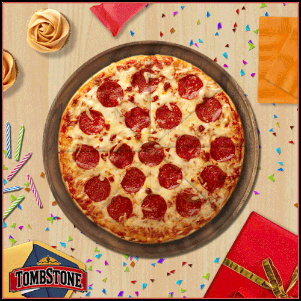

Spaghetti Recipe

Cook Time:
- Prep: 10 min
- Cook: 25 min
- Total: 35 min
Ingredients:
- 1 package (1/4 ounce) active dry yeast
- 1 teaspoon sugar
- 1-1/4 cups warm water (110* to 115*)
- 1/4 cup canola oil
- 1 teaspoon salt
Directions:
- In large bowl, dissolve yeast and sugar in water; let stand for 5 minutes. Add oil and salt. Stir in flour, 1 cup at a time, until a soft dough forms.
- Turn onto a floured surface; knead until smooth and elastic, 2-3 minutes. Place in a greased bowl, turning once to grease the top. Cover and let rise in a warm place until doubled, about 45 minutes. Meanwhile, cook beef and onion over medium heat until beef is no longer pink, breaking meat into crumbles; drain.
- Punch down dough; divide in half. Press each half into a greased 12-in. pizza pan. Combine the tomato sauce, oregano and basil; spread over each crust. Top with beef mixture, green pepper and cheese.
- Bake at 400° for 25-30 minutes or until crust is lightly browned.